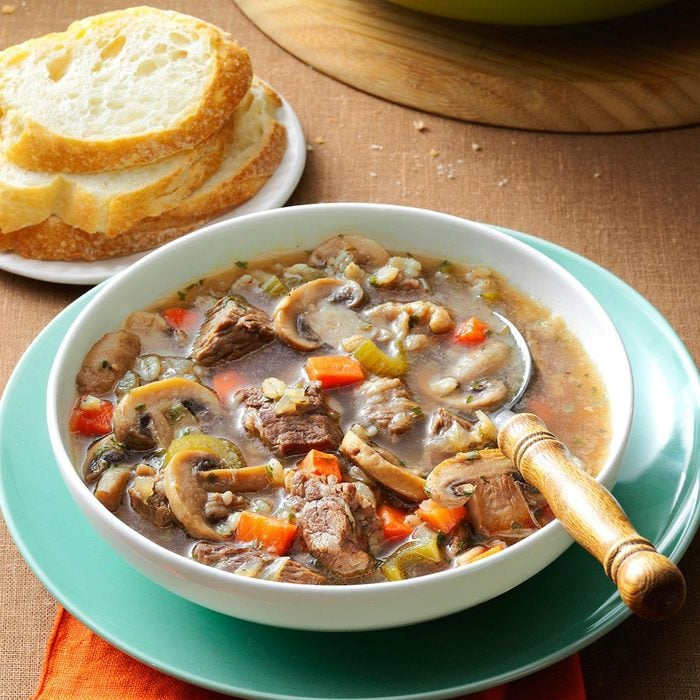

Mushroom Barley Soup
Original recipe

Time
Prep: 25 min
Cook: 1-3/4 hours
Description
Mushroom Barley Soup is a hearty and flavorful soup made with a base of tender barley grains and a rich broth
infused with a medley of earthy mushrooms. This comforting soup often includes a mix of vegetables, such as
carrots, onions, and celery, creating a wholesome and nutritious dish. Seasoned with aromatic herbs and spices,
Mushroom Barley Soup offers a satisfying combination of textures and a savory taste that makes it a classic and
nourishing choice for a comforting meal.
Ingredients
- 1-1/2 pounds boneless beef chuck, cut into 3/4-inch cubes
- 1 tablespoon canola oil
- 2 cups finely chopped onions
- 1 cup diced carrots
- 1/2 cup sliced celery
- 1 pound fresh mushrooms, sliced
- 2 garlic cloves, minced
- 1/2 teaspoon dried thyme
- 1 can (14-1/2 ounces) beef broth
- 1 can (14-1/2 ounces) chicken broth
- 2 cups water
- 1/2 cup medium pearl barley
- 1 teaspoon salt, optional
- 1/2 teaspoon pepper
- 3 tablespoons chopped fresh parsley
Steps
- In a Dutch oven or stockpot, cook meat in oil over medium heat until no longer pink. Remove meat with a
slotted spoon; keep warm and set aside.
- Saute onions, carrots and celery in drippings over medium heat until tender, about 5 minutes. Add mushrooms,
garlic and thyme; cook and stir 3 minutes. Stir in broths, water, barley, salt if desired and pepper.
- Return meat to pan; bring to a boil. Reduce heat; cover and simmer 1-1/2 to 2 hours or until barley and meat
are tender. Add parsley.
Main page